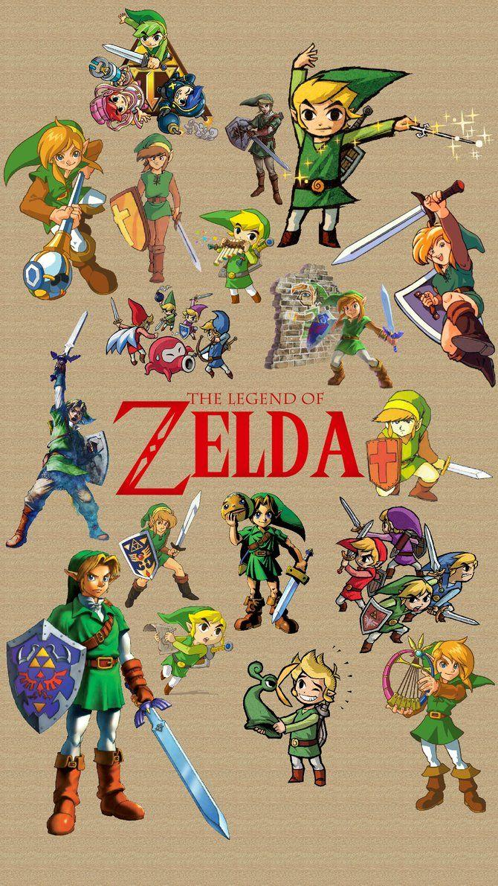

The Legend of Zelda (Fanpage)

Dale play para que suene la nostalgia.
La saga de videojuegos "The Legend of Zelda" es una de las más icónicas y queridas en la historia de los videojuegos. Creada por Shigeru Miyamoto y desarrollada por Nintendo, la serie debutó en 1986 y ha dejado una marca indeleble en la cultura gamer. Aquí te dejo algunos datos interesantes sobre esta legendaria franquicia:
Curiosidades
Curiosidades que quizás no conocías:
Link es zurdo: En la mayoría de los juegos, el protagonista usa la espada con la mano izquierda. Sin embargo, en Twilight Princess para Wii, lo hicieron diestro para coincidir con los controles.El nombre original era distinto: En Japón, el primer juego se lanzó como "Hyrule Fantasy". “The Legend of Zelda” era solo un subtítulo, pero terminó siendo el nombre oficial de la saga.
Inspiraciones curiosas:
Link está inspirado en Peter Pan (por su gorro verde y orejas puntiagudas).
Zelda toma su nombre de la escritora Zelda Fitzgerald, esposa de F. Scott Fitzgerald